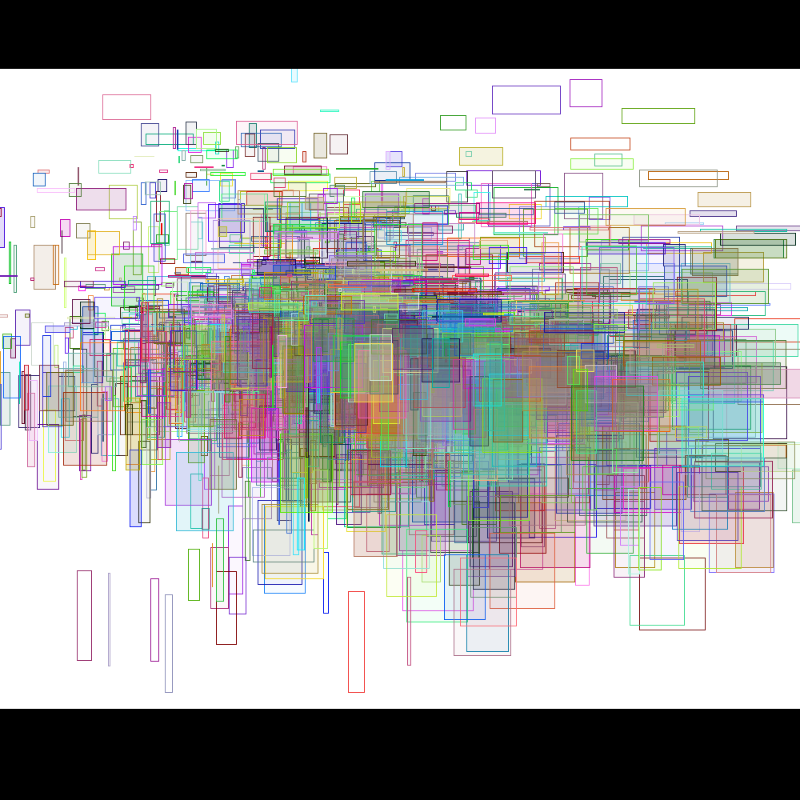
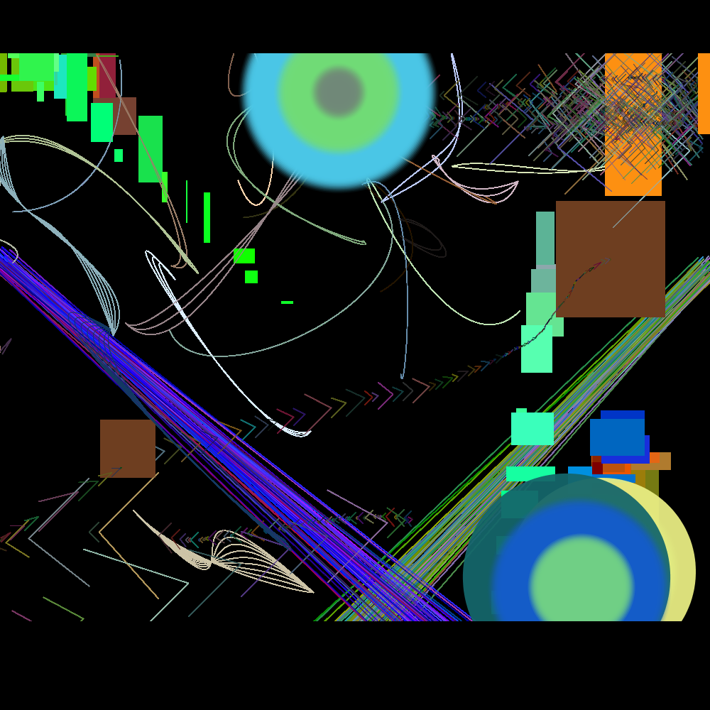
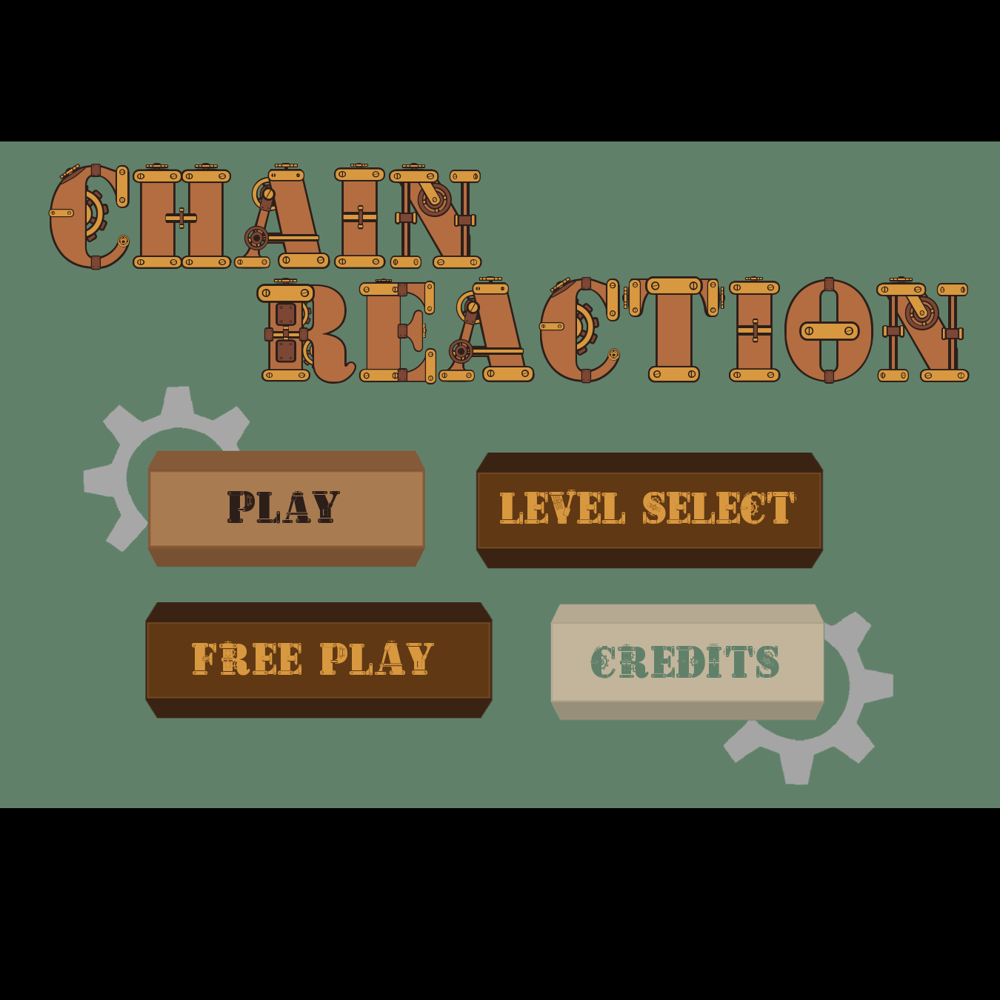
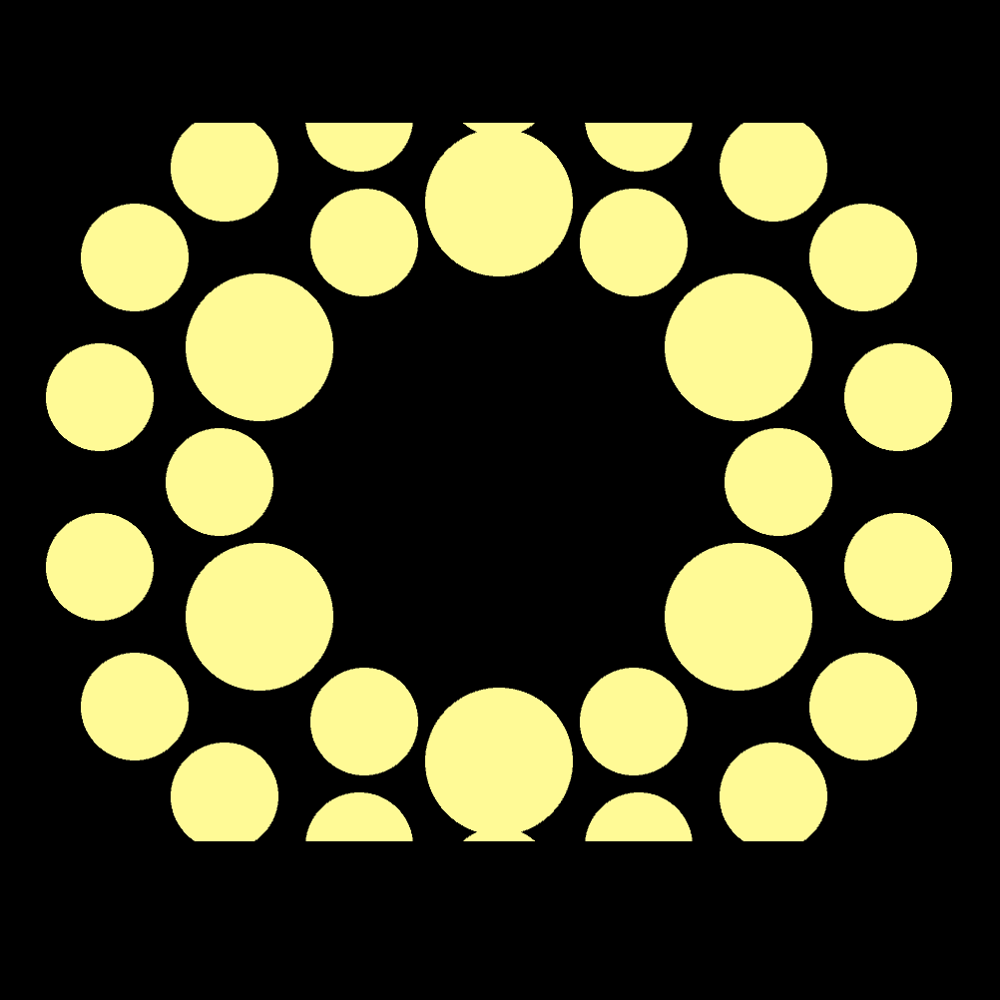
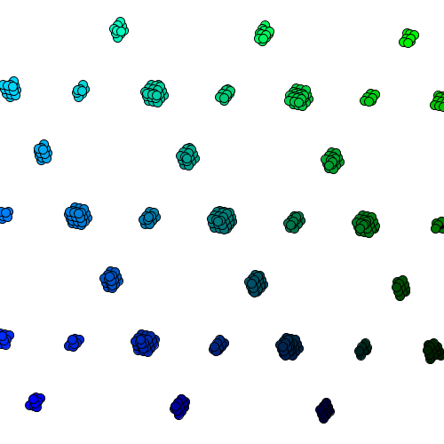

|
|
|
Processing is a software sketchbook and language for computer graphics. It is used in many Georgia Tech computer graphics classes, including Intro to Computational Media, Constructing the Movie Image, and Computer Graphics. |
|
I was first introduced to Processing in Intro to Computational Media. My first big project with the software is called CompuArt, and is a little program that allows users to create some fun, visually pleasing artworks. |
|
The Processing project I am probably most proud of is Chain Reaction. Its a puzzle game that requires players to place gears and chains of various sizes on a peg board to go from one spinning gear to one or several stationary ones. The twist is that the game is played by two players, each of whom can only see their half of the available pieces and the board. The players arent' allowed to talk to each other and must figure out how to solve the puzzles simply by working together. This is one of the first big projects I had done in Processing and I therefore learned a great deal about using the software, as well as about designing and creating a fun playable game. It is also the first game I'd worked on where I was the primary programmer. |
|
In constructing the Moving Image we learned about Visual Music and artists like Oskar Fischinger, Norman McLaren, and James Whitney and were tasked to create our own works of visual music, in Processing, that worked with or without the actual music playing. |
|
Most recently in computer graphics we've made the jump from the standard Java Processing to using Python. To learn this we created simple fractal graphics programs. |
|
To run these Processing Programs you'll need to download
the zip file. Some include executables for Windows, but in
order to see the actual code you'll still need to download
Processing. |
|

A simple image made by a user in CompuArt

An image using some of the more advanced methods in CompuArt
Here's a quick demo video for Chain Reaction! There two different modes,
free play, where you can create your own contraption, and the actual puzzles.
contraption.

I had a lot of fun with the steam punk
art style we went with for Chain Reaction, especially in
creating the title and level select menus.

My Visual Music creation used a variety of shapes
and patterns to sort of beat and feeling of the music.

A great variety of interesting patterns can be made
by moving the mouse around in the fractals program.
|
{kind=link}